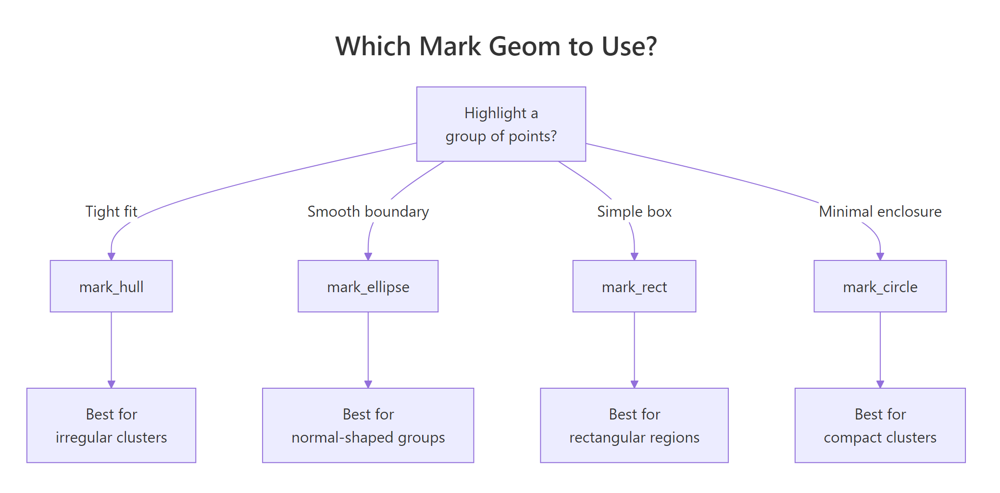
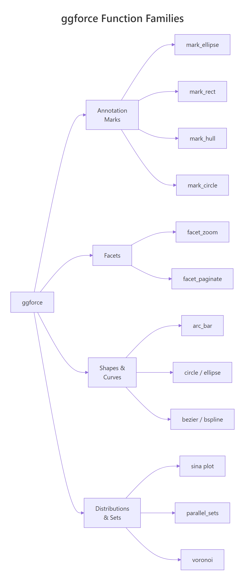

The ggforce package extends ggplot2 with over 30 specialised geoms, facets, and transformations, from zooming into crowded scatter plots with facet_zoom() to annotating clusters with geom_mark_ellipse() to building donut charts with geom_arc_bar().
How Does facet_zoom() Let You Zoom into Crowded Plots?
You have a scatter plot, but one cluster hides behind another. How do you zoom in without losing the big picture? That's exactly what facet_zoom() solves, it creates a zoomed panel alongside the full view, connected by a shaded region that shows you exactly where you're looking.
Rfacetzoom by species condition
library(ggplot2)library(ggforce)ggplot(iris, aes(Petal.Length, Petal.Width, colour = Species)) +geom_point(size =2) +facet_zoom(x = Species =="setosa") +labs(title ="Iris Petals, Zoomed into Setosa", x ="Petal Length", y ="Petal Width")#> A two-panel plot: the left panel zooms into setosa#> (Petal.Length roughly 1–2), while the right panel shows#> all three species with a shaded box marking the zoom region
The left panel shows only the setosa data at full resolution, while the right panel keeps the big picture with a highlighted rectangle showing where the zoom came from. One line of code, two perspectives.
You can also zoom by specifying exact axis limits instead of a logical condition. The zoom.size argument controls how large the zoomed panel is relative to the context panel, bigger values give more room to the zoomed view.
Rfacetzoom with manual range
ggplot(iris, aes(Petal.Length, Petal.Width, colour = Species)) +geom_point(size =2) +facet_zoom(xlim =c(3, 5), ylim =c(1, 1.8), zoom.size =1.5) +labs(title ="Iris Petals, Manual Zoom Range")#> Zooms into the region where versicolor and virginica overlap,#> with the zoomed panel 1.5x the size of the context panel
Sometimes you only want to show the relevant data inside the zoomed panel, not every point from the full dataset. The zoom.data parameter handles this. Set it to a logical expression, and only matching rows appear in the zoom panel.
Rzoom.data filters zoom panel only
ggplot(iris, aes(Petal.Length, Petal.Width, colour = Species)) +geom_point(size =2) +facet_zoom(x = Species =="versicolor", zoom.data = Species =="versicolor") +labs(title ="Only Versicolor in the Zoom Panel")#> The zoom panel shows versicolor points only, the other#> species are visible in the context panel but not the zoom
This is especially useful when overlapping groups make the zoomed panel cluttered.
Tip
Set zoom.size between 1 and 3 for the best balance. The default is 2, which works well for most plots. Values below 1 make the zoom panel too small to read; values above 3 can squeeze the context panel.
Try it: Create a facet_zoom scatter plot of mtcars with wt on the x-axis and mpg on the y-axis, coloured by factor(cyl). Zoom into cars where mpg > 25.
RExercise: Zoom into fuel-efficient cars
# Try it: zoom into fuel-efficient carsex_zoom <-ggplot(mtcars, aes(wt, mpg, colour =factor(cyl))) +geom_point(size =3)# Add facet_zoom to show only mpg > 25# your code here
Click to reveal solution
RFuel-efficient zoom solution
ex_zoom <-ggplot(mtcars, aes(wt, mpg, colour =factor(cyl))) +geom_point(size =3) +facet_zoom(y = mpg >25) +labs(x ="Weight (1000 lbs)", y ="Miles per Gallon")ex_zoom#> Zoomed panel shows the 6 most fuel-efficient cars (all#> 4-cylinder), while the context panel shows the full range
Explanation:facet_zoom(y = mpg > 25) zooms the y-axis to show only rows where mpg exceeds 25, keeping the full x-axis range.
How Do geom_mark Functions Annotate Groups in Your Plot?
Scatter plots often need annotations that say "these points belong together." The geom_mark_* family draws shapes around grouped points with optional labels and connector lines. There are four variants: geom_mark_ellipse(), geom_mark_rect(), geom_mark_circle(), and geom_mark_hull().
Let's start with the most commonly used, geom_mark_ellipse(). It fits an optimal ellipse around each group using the Khachiyan algorithm.
Rgeommarkellipse around species
ggplot(iris, aes(Petal.Length, Petal.Width)) +geom_mark_ellipse(aes(fill = Species, label = Species), alpha =0.15) +geom_point(aes(colour = Species), size =2) +labs(title ="Iris Species, Annotated with Ellipses", x ="Petal Length", y ="Petal Width")#> Each species gets a coloured, semi-transparent ellipse with#> a label automatically placed outside the shape. Setosa is#> completely separated; versicolor and virginica overlap slightly.
Each group gets a smooth ellipse with an automatically placed label. The labels move dynamically to avoid overlapping the data, you don't need to position them manually.
Now let's compare geom_mark_rect() and geom_mark_hull() side by side. Rectangles give bounding boxes, while hulls trace the tightest possible boundary around each group.
The hull version is much tighter. The concavity argument controls how closely the hull follows the points, lower values create tighter, more concave shapes.
You can also add descriptions and customise connector lines. The con.type argument controls whether the label connects with an elbow, a straight line, or no connector at all.
RAdd descriptions to geommark
species_desc <-c( setosa ="Small petals,\neasily separated", versicolor ="Medium petals,\noverlaps virginica", virginica ="Largest petals\nof all three")ggplot(iris, aes(Petal.Length, Petal.Width)) +geom_mark_ellipse(aes(fill = Species, label = Species, description = species_desc[Species]), con.type ="straight", con.cap =unit(0, "mm"), label.fontsize =10, alpha =0.1 ) +geom_point(aes(colour = Species), size =1.5) +labs(title ="Annotated Clusters with Descriptions")#> Each ellipse now has a two-line annotation: the species#> name in bold and a description below, connected to the#> ellipse by a straight line
The con.cap argument controls how close the connector line gets to the mark, setting it to 0 makes the line touch the ellipse boundary.

Figure 1: Decision guide, which geom_mark function to use for your cluster shape.
Key Insight
Use mark_hull for irregular clusters and mark_ellipse for normally distributed groups. Hulls trace the exact boundary, so they work for any shape. Ellipses assume a roughly oval distribution and will leave gaps or include outliers if the cluster is L-shaped or multi-modal.
Try it: Use geom_mark_hull() to highlight 6-cylinder cars in mtcars, plotting wt vs mpg. Use the filter aesthetic to show only the 6-cylinder hull.
RExercise: Hull around six-cylinder cars
# Try it: highlight 6-cylinder cars with a hullex_mark <-ggplot(mtcars, aes(wt, mpg)) +geom_point(aes(colour =factor(cyl)), size =3)# Add geom_mark_hull for cyl == 6 only# Hint: use the filter aesthetic# your code here
Click to reveal solution
RSix-cylinder hull solution
ex_mark <-ggplot(mtcars, aes(wt, mpg)) +geom_mark_hull(aes(fill =factor(cyl), filter = cyl ==6, label ="6-cylinder"), alpha =0.2, concavity =3) +geom_point(aes(colour =factor(cyl)), size =3) +labs(x ="Weight (1000 lbs)", y ="Miles per Gallon")ex_mark#> Only the 6-cylinder group is enclosed in a hull;#> 4-cyl and 8-cyl points are visible but unmarked
Explanation: The filter aesthetic restricts the mark to rows where cyl == 6. Other points still appear as dots but aren't enclosed.
How Do You Build Pie and Donut Charts with geom_arc_bar()?
Unlike base R's pie(), ggforce gives you full ggplot2 control over pie and donut charts through geom_arc_bar(). You specify start and end angles in radians, plus inner (r0) and outer (r) radii. Setting r0 = 0 gives a pie; setting r0 > 0 gives a donut.
The trade-off is that you need to pre-compute the angles yourself. Let's walk through it step by step.
RPie chart with geomarcbar
library(dplyr)pie_data <- mtcars |>count(cyl) |>mutate( fraction = n /sum(n), end =cumsum(fraction) *2*pi, start =lag(end, default =0), mid = (start + end) /2, label =paste0(cyl, "-cyl\n(", n, " cars)") )ggplot(pie_data) +geom_arc_bar(aes(x0 =0, y0 =0, r0 =0, r =1, start = start, end = end, fill =factor(cyl))) +geom_text(aes(x =0.6*cos(mid), y =0.6*sin(mid), label = label), size =3.5) +coord_fixed() +theme_void() +labs(title ="mtcars by Cylinder Count") +theme(legend.position ="none")#> A pie chart with three slices: 4-cyl (11 cars),#> 6-cyl (7 cars), 8-cyl (14 cars), each labelled#> directly on the slice
Each slice is a wedge defined by start and end angles. The x0 and y0 set the centre, while r and r0 set the outer and inner radii. For a pie chart, r0 = 0 means the wedges go all the way to the centre.
Converting this to a donut chart is a one-character change, set r0 to something greater than zero.
RDonut chart of diamond cut
donut_data <- diamonds |>count(cut) |>mutate( fraction = n /sum(n), end =cumsum(fraction) *2*pi, start =lag(end, default =0), mid = (start + end) /2, pct =paste0(round(fraction *100, 1), "%") )ggplot(donut_data) +geom_arc_bar(aes(x0 =0, y0 =0, r0 =0.5, r =1, start = start, end = end, fill = cut)) +geom_text(aes(x =0.75*cos(mid), y =0.75*sin(mid), label = pct), size =3.5) +coord_fixed() +theme_void() +labs(title ="Diamond Cut Distribution")#> A donut chart with 5 segments (Fair through Ideal),#> percentages placed inside each arc. Ideal dominates at 39.9%.
The donut's hole (r0 = 0.5) is a great place for a summary label or total count.
Warning
You must pre-compute angles for geom_arc_bar. Unlike functions that compute positions for you, geom_arc_bar() expects explicit start and end angles in radians. Forgetting to compute cumsum() or converting degrees instead of radians are the two most common bugs.
Try it: Create a donut chart showing the distribution of gear values in mtcars. Use r0 = 0.4 and r = 1.
RExercise: Donut of gear counts
# Try it: donut chart of mtcars$gearex_donut <- mtcars |>count(gear) |>mutate( fraction = n /sum(n), end =cumsum(fraction) *2*pi, start =lag(end, default =0) )# Build the donut with geom_arc_bar# your code here
Click to reveal solution
RGear count donut solution
ex_donut <- mtcars |>count(gear) |>mutate( fraction = n /sum(n), end =cumsum(fraction) *2*pi, start =lag(end, default =0), mid = (start + end) /2 )ggplot(ex_donut) +geom_arc_bar(aes(x0 =0, y0 =0, r0 =0.4, r =1, start = start, end = end, fill =factor(gear))) +coord_fixed() +theme_void() +labs(title ="Cars by Gear Count")#> Donut with three segments: 3-gear (15), 4-gear (12),#> 5-gear (5). The 3-gear slice is the largest.
Explanation: Setting r0 = 0.4 creates the donut hole. The coord_fixed() ensures the chart is circular rather than oval.
What Are geom_sina() Plots and When Should You Use Them?
A sina plot is a jittered strip chart where each point's horizontal spread matches the local density, like a violin plot filled with actual data points. This gives you the distribution shape of a violin plot and the individual observations of a jitter plot in one layer.
Rgeomsina layered over violin
ggplot(iris, aes(Species, Petal.Width)) +geom_violin(fill ="grey90", colour ="grey70") +geom_sina(aes(colour = Species), size =1.8, alpha =0.7) +labs(title ="Petal Width by Species, Sina + Violin", y ="Petal Width (cm)") +theme(legend.position ="none")#> Setosa points are tightly clustered around 0.2–0.4 cm.#> Versicolor spreads from 1.0 to 1.8. Virginica ranges#> widest from 1.4 to 2.5, with a cluster near 1.8.
Notice how the points spread wider where more observations cluster together. This is much more informative than a simple geom_jitter(), which spreads points randomly regardless of density.
You can control the maximum width of the spread with maxwidth and adjust the bandwidth that determines the density estimate with scale.
RSina over boxplot
ggplot(iris, aes(Species, Sepal.Length)) +geom_boxplot(width =0.3, outlier.shape =NA, fill ="grey95") +geom_sina(aes(colour = Species), maxwidth =0.6, size =1.5, alpha =0.6) +labs(title ="Sepal Length, Sina over Boxplot", y ="Sepal Length (cm)") +theme(legend.position ="none")#> Boxplots provide median/quartile summaries while sina#> points reveal the actual distribution shape beneath, #> virginica shows a bimodal pattern the boxplot hides
Overlaying sina on a boxplot is one of the most effective distribution plots you can make. The boxplot gives you the summary statistics, and the sina layer reveals patterns the boxplot hides, like bimodality or gaps in the data.
Tip
Layer sina plots over violin or boxplot for maximum information density. Use a light fill colour on the violin/box (like grey90) so the sina points remain readable.
Try it: Create a sina plot of mpg by factor(cyl) using mtcars. Overlay it on a boxplot.
RExercise: Sina over mtcars boxplot
# Try it: sina + boxplot for mtcarsex_sina <-ggplot(mtcars, aes(factor(cyl), mpg)) +geom_boxplot(width =0.3, outlier.shape =NA, fill ="grey95")# Add geom_sina layer# your code here
Click to reveal solution
RSina over mtcars solution
ex_sina <-ggplot(mtcars, aes(factor(cyl), mpg)) +geom_boxplot(width =0.3, outlier.shape =NA, fill ="grey95") +geom_sina(aes(colour =factor(cyl)), size =2.5, alpha =0.7) +labs(x ="Cylinders", y ="Miles per Gallon") +theme(legend.position ="none")ex_sina#> 4-cyl cars cluster high (25–34 mpg), 6-cyl in the#> middle (17–21), 8-cyl at the bottom (10–19) with#> more spread, the sina layer shows the density shape
Explanation:geom_sina() automatically computes local density and spreads points horizontally to match.
How Do You Draw Smooth Curves with Bezier and B-Spline Geoms?
Sometimes you need smooth curved lines between points, for flow diagrams, annotation connectors, or artistic plots. ggforce provides geom_bezier() for Bezier curves and geom_bspline() for B-spline curves.
A Bezier curve passes through its first and last control points, while intermediate points pull the curve toward them without touching. Let's draw one with three control points.
RQuadratic Bezier curve demo
library(tibble)bezier_pts <-tibble( x =c(0, 1.5, 3), y =c(0, 2.5, 0.5), group =1)ggplot(bezier_pts, aes(x, y, group = group)) +geom_bezier(linewidth =1.2, colour ="steelblue") +geom_point(size =4, colour ="firebrick") +geom_text(aes(label =paste0("P", seq_len(3))), nudge_y =0.2, size =4) +labs(title ="Quadratic Bezier Curve (3 Control Points)") +theme_minimal()#> A smooth curve starting at P1 (0,0), pulled upward#> toward P2 (1.5, 2.5), and ending at P3 (3, 0.5).#> The curve doesn't touch P2, it only bends toward it.
The red dots are the control points. Notice how the curve starts at P1, bends toward P2, and ends at P3, but never actually touches P2. That's how Bezier curves work.
B-splines work differently: they create a smooth curve that approximates all control points, producing a more uniformly smooth result.
RB-spline through six points
bspline_pts <-tibble( x =c(0, 1, 2, 3, 4, 5), y =c(1, 3, 1.5, 4, 2, 3.5), group =1)ggplot(bspline_pts, aes(x, y, group = group)) +geom_bspline(linewidth =1.2, colour ="steelblue") +geom_point(size =3, colour ="firebrick") +labs(title ="B-Spline Through 6 Control Points") +theme_minimal()#> A smooth, flowing curve that loosely follows the zigzag#> pattern of the 6 control points, creating gentle waves#> rather than sharp turns
B-splines are smoother than Bezier curves when you have many control points. The trade-off is that they don't pass through any of the interior points, they approximate the overall shape.
Note
Bezier curves pass through start and end points only; B-splines approximate all control points. Choose Bezier when you need exact endpoints (e.g., connecting two annotations). Choose B-splines when you need a smooth flowing path through many waypoints.
Try it: Create a Bezier curve with 4 control points forming an S-shape. Use coordinates: (0,0), (1,3), (2,-1), (3,2).
RExercise: S-shaped four-point Bezier
# Try it: S-shaped bezier with 4 control pointsex_bezier <-tibble( x =c(0, 1, 2, 3), y =c(0, 3, -1, 2), group =1)# Draw the bezier curve + control points# your code here
Click to reveal solution
RS-shaped Bezier solution
ex_bezier <-tibble( x =c(0, 1, 2, 3), y =c(0, 3, -1, 2), group =1)ggplot(ex_bezier, aes(x, y, group = group)) +geom_bezier(linewidth =1.2, colour ="steelblue") +geom_point(size =4, colour ="firebrick") +theme_minimal()#> A smooth S-curve starting at (0,0), bulging up toward#> (1,3), dipping toward (2,-1), and ending at (3,2).#> With 4 points this is a cubic Bezier curve.
Explanation: Four control points produce a cubic Bezier curve. The two interior points shape the curve but the line only touches the endpoints.
What Other ggforce Geoms Are Worth Knowing?
Beyond the major features above, ggforce offers several more geoms that solve specific problems. Here are the most useful ones.
geom_circle() draws circles at specified positions with given radii, great for bubble-style annotations or creating diagrams directly in ggplot2.
Rgeomcircle at fixed positions
circles_df <-tibble( x0 =c(1, 3, 5), y0 =c(2, 2, 2), r =c(0.5, 0.8, 1.2), label =c("Small", "Medium", "Large"))ggplot(circles_df) +geom_circle(aes(x0 = x0, y0 = y0, r = r, fill = label), alpha =0.3) +geom_text(aes(x = x0, y = y0, label = label)) +coord_fixed() +labs(title ="Circles at Specified Positions") +theme_minimal() +theme(legend.position ="none")#> Three circles of increasing size (radii 0.5, 0.8, 1.2)#> placed at y=2, each labelled in the centre. coord_fixed()#> keeps them circular rather than oval.
coord_fixed() is essential when drawing circles, without it, the circles stretch into ovals depending on the plot aspect ratio.
geom_voronoi_segment() creates a Voronoi tessellation from a set of points. Each cell contains all space closer to its point than to any other, useful for spatial analysis and artistic data visualisation.
RVoronoi tessellation from points
set.seed(42)voronoi_pts <-tibble( x =runif(20, 0, 10), y =runif(20, 0, 10), group =sample(c("A", "B"), 20, replace =TRUE))ggplot(voronoi_pts, aes(x, y)) +geom_voronoi_segment(colour ="grey60") +geom_point(aes(colour = group), size =3) +labs(title ="Voronoi Tessellation, 20 Random Points") +theme_minimal()#> A web of line segments dividing the plot into 20 cells,#> one per point. Each cell boundary is equidistant between#> two neighbouring points. Group A and B points are coloured#> differently but the tessellation treats all points equally.
Every cell boundary is equidistant between two neighbouring points. Voronoi diagrams are used in spatial analysis, nearest-neighbour problems, and creating artistic generative plots.
Key Insight
Voronoi cells reveal spatial proximity: each cell contains all space closer to its centre point than to any other point. This makes Voronoi diagrams a powerful visual tool for understanding spatial relationships, coverage areas, and nearest-neighbour structure.
Try it: Draw 5 circles of different sizes on a blank canvas using geom_circle(). Give each circle a different fill colour and use coord_fixed().
RExercise: Five coloured circles
# Try it: 5 coloured circlesex_circles <-tibble( x0 =c(1, 3, 5, 2, 4), y0 =c(1, 3, 1, 2.5, 2.5), r =c(0.4, 0.6, 0.8, 0.5, 0.7))# Draw them with geom_circle# your code here
Click to reveal solution
RFive circles solution
ex_circles <-tibble( x0 =c(1, 3, 5, 2, 4), y0 =c(1, 3, 1, 2.5, 2.5), r =c(0.4, 0.6, 0.8, 0.5, 0.7), id =paste("Circle", 1:5))ggplot(ex_circles) +geom_circle(aes(x0 = x0, y0 = y0, r = r, fill = id), alpha =0.4) +coord_fixed() +theme_void() +theme(legend.position ="none")#> Five overlapping circles of different sizes and colours#> arranged in a loose cluster
Explanation:geom_circle() takes centre coordinates (x0, y0) and radius (r). Each circle is drawn as a polygon, so it responds to fill, colour, and alpha aesthetics.
Practice Exercises
Exercise 1: Zoom and Annotate Diamonds
Create a scatter plot of diamonds (price vs carat) with these requirements:
Use facet_zoom() to zoom into the 0–1 carat range
Inside the zoomed panel, add geom_mark_ellipse() to highlight the different cut categories
Colour points by cut
RExercise: Zoom plus ellipse on diamonds
# Exercise 1: facet_zoom + geom_mark_ellipse on diamonds# Hint: facet_zoom(x = carat <= 1) then layer mark_ellipse with aes(fill = cut)# Write your code below:
Click to reveal solution
RDiamonds zoom and ellipse solution
ggplot(diamonds, aes(carat, price, colour = cut)) +geom_point(alpha =0.1, size =0.5) +geom_mark_ellipse(aes(fill = cut), alpha =0.05) +facet_zoom(x = carat <=1, zoom.size =2) +labs(title ="Diamond Price vs Carat, Zoomed to Small Stones", x ="Carat", y ="Price ($)") +theme(legend.position ="bottom")#> The zoomed panel reveals that cut categories overlap heavily#> in the 0–1 carat range, with Ideal and Premium clustering#> at slightly different price points
Explanation: Combining facet_zoom() with geom_mark_ellipse() lets you see both the overall price-carat relationship and the fine structure of cut groups in small stones.
Exercise 2: Sina + Hull + Zoom Combo
Build a multi-layer plot using iris data:
Base layer: geom_sina() for distribution of Sepal.Width by Species
Annotation layer: geom_mark_hull() around each species group
Zoom layer: facet_zoom() to zoom into setosa
RExercise: Sina, hull, and zoom layered
# Exercise 2: combine sina + mark_hull + facet_zoom# Hint: all three layers stack with + just like any ggplot# Write your code below:
Click to reveal solution
RSina hull zoom solution
ggplot(iris, aes(Species, Sepal.Width, colour = Species)) +geom_mark_hull(aes(fill = Species, group = Species), alpha =0.1, concavity =3) +geom_sina(size =2, alpha =0.7) +facet_zoom(x = Species =="setosa") +labs(title ="Sepal Width Distribution, Sina + Hull + Zoom", y ="Sepal Width (cm)") +theme(legend.position ="none")#> The zoomed panel shows setosa's sepal width distribution#> (roughly 2.3–4.4 cm) enclosed in a hull, with sina points#> revealing the density shape
Explanation: Layering three ggforce features creates a rich visualisation. The sina layer shows individual data, the hull defines cluster boundaries, and the zoom focuses on one group.
Exercise 3: Donut Chart with Labels
Create a donut chart of mtcars$am (transmission type: 0 = automatic, 1 = manual) using geom_arc_bar(). Add percentage labels inside each arc and a total count in the centre of the donut.
RExercise: Transmission donut chart
# Exercise 3: donut chart of transmission types# Hint: pre-compute angles with cumsum, use r0 = 0.5 for the hole# Write your code below:
Click to reveal solution
RTransmission donut solution
my_donut <- mtcars |>mutate(transmission =ifelse(am ==0, "Automatic", "Manual")) |>count(transmission) |>mutate( fraction = n /sum(n), end =cumsum(fraction) *2*pi, start =lag(end, default =0), mid = (start + end) /2, pct =paste0(round(fraction *100, 1), "%") )ggplot(my_donut) +geom_arc_bar(aes(x0 =0, y0 =0, r0 =0.5, r =1, start = start, end = end, fill = transmission)) +geom_text(aes(x =0.75*cos(mid), y =0.75*sin(mid), label = pct), size =5, fontface ="bold") +annotate("text", x =0, y =0, label ="32\ncars", size =5, fontface ="bold") +coord_fixed() +theme_void() +labs(title ="Automatic vs Manual Transmission")#> Donut chart: Automatic 59.4% (19 cars), Manual 40.6%#> (13 cars), with "32 cars" in the centre hole
Explanation: The annotate("text") places a summary in the donut hole. Percentages sit inside each arc using polar coordinate math (cos(mid) and sin(mid)).
Putting It All Together
Let's build a complete, polished visualisation that combines several ggforce features on the diamonds dataset.
REnd-to-end diamonds showcase
diamonds_small <- diamonds |>slice_sample(n =2000, seed =123)ggplot(diamonds_small, aes(carat, price)) +geom_point(aes(colour = cut), alpha =0.4, size =1.5) +geom_mark_ellipse(aes(fill = cut, filter = cut %in%c("Ideal", "Fair"), label = cut), alpha =0.08, con.type ="elbow", label.fontsize =9 ) +facet_zoom(x = carat <1.5, zoom.size =1.5) +scale_colour_brewer(palette ="Set2") +scale_fill_brewer(palette ="Set2") +labs( title ="Diamond Price by Carat, ggforce Showcase", subtitle ="Zoomed into < 1.5 carat | Ideal vs Fair cuts highlighted", x ="Carat", y ="Price ($)" ) +theme_minimal() +theme(legend.position ="bottom")#> A two-panel plot: the zoomed panel focuses on sub-1.5-carat#> diamonds with ellipses highlighting the Ideal cluster (high#> price for its size) and Fair cluster (lower, more spread).#> The context panel shows the full exponential price-carat curve.
This plot tells a story in one frame: the full price-carat curve shows exponential growth, while the zoomed panel reveals how cut quality creates distinct clusters at smaller sizes. The ellipse annotations draw the reader's eye to the key comparison, Ideal vs Fair, without overwhelming the plot.
Summary
Function
Purpose
Key Parameters
facet_zoom()
Zoom into a region while keeping context
x, y, xlim, ylim, zoom.size, zoom.data
geom_mark_ellipse()
Annotate groups with ellipses
label, description, con.type, expand, alpha
geom_mark_rect()
Annotate groups with rectangles
Same as ellipse
geom_mark_hull()
Annotate groups with tight hulls
concavity, plus same as ellipse
geom_mark_circle()
Annotate groups with circles
Same as ellipse
geom_arc_bar()
Pie and donut charts
x0, y0, r0, r, start, end
geom_sina()
Density-aware jittered strip chart
maxwidth, scale
geom_bezier()
Smooth Bezier curves
Control points via x, y, group
geom_bspline()
Smooth B-spline curves
Control points via x, y, group
geom_circle()
Circles at specified positions
x0, y0, r
geom_voronoi_segment()
Voronoi tessellation lines
x, y

Figure 2: Overview of ggforce's main function families.
References
Pedersen, T.L., ggforce: Accelerating 'ggplot2'. Official package documentation. Link
Pedersen, T.L., "Accelerate your plots with ggforce", R Views (2019). Link
Wickham, H., ggplot2: Elegant Graphics for Data Analysis, 3rd Edition. Springer (2016). Link
Rapp, A., "A couple of visualizations from ggforce". Link
ggforce GitHub repository, thomasp85/ggforce. Link
Sidiropoulos, N. et al., "SinaPlot: An Enhanced Chart for Simple and Truthful Representation of Single Observations over Multiple Classes", Journal of Computational and Graphical Statistics (2018). Link